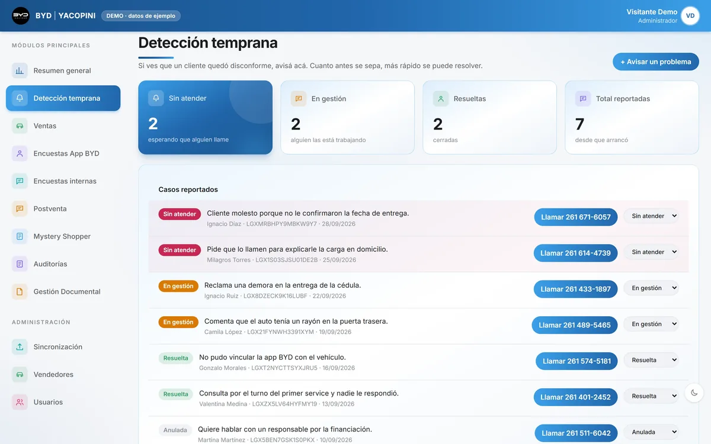
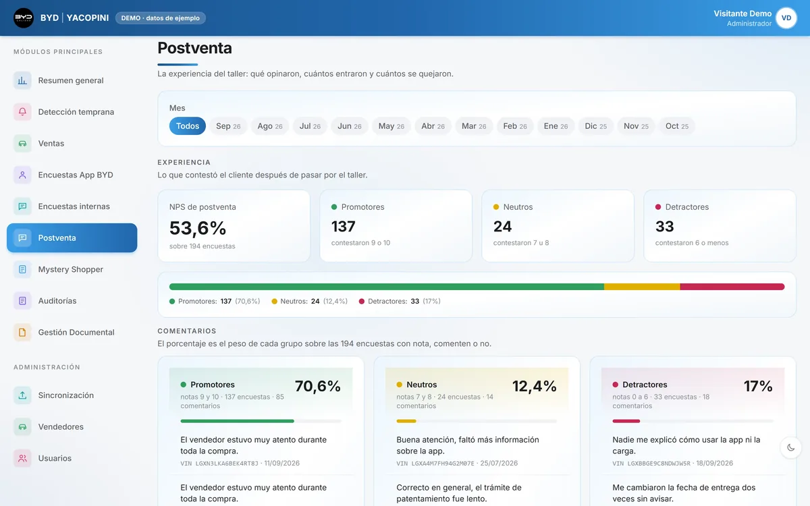

Plataforma empresarial
Portal de Calidad BYD
Cuatro tableros y seis planillas, reemplazados por un portal que se actualiza solo y le muestra a cada persona lo que necesita.


Resumen del proyecto
- Industria
- Automotriz, calidad y experiencia de cliente
- Producto
- Aplicación web interna, instalable en escritorio y celular
- Mi rol
- Diseño UX/UI y desarrollo de punta a punta
- Responsabilidades
- Relevamiento de fuentes, roles y permisos, arquitectura de información, dashboards, front-end, guía de adopción
- Stakeholders
- El equipo de Calidad de un concesionario oficial BYD en Mendoza, Argentina
- Duración
- Desde septiembre de 2026
- Herramientas
- Figma, React, TypeScript, Supabase, Recharts
- Estado
- En uso. Hay una demo pública con datos de ejemplo
Todas las pantallas son de la demo pública. Los nombres, teléfonos y cifras son datos de ejemplo y no se muestra información interna.
En un minuto
Problema
La información de calidad vivía en seis planillas y cuatro tableros de Power BI que se actualizaban a mano. Los clientes disconformes aparecían en una encuesta, semanas después de la entrega.
Enfoque
Mantuve como fuente las planillas que el equipo ya usaba y diseñé a partir de los roles: qué tiene que hacer, ver y no ver cada persona. Lo urgente aparece antes que cualquier gráfico.
Resultado
Un portal en lugar de cuatro tableros, seis planillas que se sincronizan solas, seis roles con permisos propios y segundos entre guardar un Excel y verlo en pantalla.
01El desafío
Cuatro tableros, seis planillas y nadie mirando lo mismo.
El equipo de Calidad sigue el NPS de fábrica, el NPS del taller, las encuestas del call center, las visitas de Mystery Shopper, las entregas y las auditorías. Cada fuente vivía en su archivo y alguien tenía que mantener vivos los tableros.
Datos dispersos
- Seis planillas de Excel distintas
- Cuatro tableros de Power BI
- Actualizar dependía de una persona
Reclamos tardíos
- Un cliente disconforme aparecía en la encuesta semanas después de la entrega
- Para entonces el problema era más difícil de resolver
Restricciones
- No se podía cambiar cómo se cargan las planillas
- Personas con poco tiempo, muchas veces desde el celular
- Cada rol debe ver sólo lo que le corresponde
¿Cómo podríamos lograr que todo el equipo vea los mismos números, siempre al día, y que un cliente disconforme se atienda antes de aparecer en una encuesta?
02Investigación y descubrimiento
Empezar por los archivos en los que la gente ya confía.
El relevamiento de las fuentes encontró dos problemas: dónde vivían los datos y qué escribían las personas en ellos.
Comentarios escritos en columnas numéricas y vendedores cargados como “Otros” distorsionaban los resultados sin que nadie lo notara. Un tablero más rápido con las mismas dudas no habría resuelto nada.
Evidencia
Lo que se sabía
- Seis planillas alimentan todos los indicadores que sigue el equipo
- Los errores de carga cambiaban los resultados
- Compartir un tablero era compartirlo entero, con los resultados de todos
Supuestos
Lo que se diseñó como hipótesis
- Un vendedor avisa un problema si le lleva segundos desde el celular
- Un número con su base genera más confianza que un número solo
Pendiente
Lo que falta confirmar con uso real
- Cuánto tarda Calidad en llamar desde que se reporta
- Cuántas respuestas se recuperan al corregir las planillas
Tres principios
Nadie carga dos veces
El portal se adapta a las planillas en uso, no al revés.
Cada número, con contexto
Cada indicador dice sobre cuántos casos se calcula y cómo viene contra el mes anterior.
Lo urgente, primero
Un cliente sin atender se ve antes que cualquier gráfico.
03Recorridos y flujos
Un mismo portal, seis maneras de usarlo.
Fuentes que no cambian
VentasEncuestas app BYDEncuestas internasMystery ShopperNPS del tallerIngresos al tallerSincronización automática
Vigila la carpetaSegundos después de guardarNunca duplicaVentas por VIN, encuestas por IDDescarta lo que no entiendeNo inventa un valorPortal
12 módulosFiltros de mes y vendedor que te siguenDetección tempranaAvisar, llamar, resolverInforme del mesPDFPermisos por rol
CalidadVendedorAuditorResponsableGerenciaAdministrador
| Rol | Qué necesita | Qué puede hacer |
|---|---|---|
| Calidad | Ver todos los indicadores y actuar rápido sobre los disconformes | Todo lo operativo, todos los sectores |
| Vendedor | Avisar un problema en el momento y seguir su desempeño | Sólo sus entregas, su NPS y sus avisos |
| Auditor | Registrar auditorías y Mystery Shopper | Cargar y ver resultados |
| Responsable | Seguir los resultados de su sector | Trabaja sobre el sector que tiene asignado |
| Gerencia | Entender el mes sin pedir un informe | Ver todo, no modificar nada |
| Administrador | Dar de alta personas y asignar roles | Todo, incluidos los usuarios |
Detección temprana, paso a paso
- El vendedor lo nota y lo carga desde el salón, con nombre y teléfono.
- Calidad lo ve primero Los casos sin atender quedan arriba, en rojo y escritos.
- Un toque llama El botón principal es la llamada, no el formulario.
- El caso avanza Sin atender, en gestión, resuelta o anulada.
04Exploración de diseño
Cinco cambios en el trabajo diario del equipo.
Antes
Actualizar era una tarea
Alguien exportaba las planillas y refrescaba los tableros. Si no lo hacía, los números quedaban viejos.
Después
Se actualiza al guardar el Excel
Un proceso sube los cambios en segundos. Volver a subir un archivo no duplica nada.
Qué costó: depende de un proceso en una computadora, por eso hay una pantalla de respaldo manual.
Antes
Un módulo de reclamos
El reclamo se registraba cuando el cliente ya lo había dicho en una encuesta.
Después
Detección temprana, desde el celular
Quien nota a un cliente disconforme lo carga en el momento, y Calidad llama.
Antes
Filtrar en cada tablero
Mirar septiembre en ventas y después en encuestas implicaba elegir el mes otra vez.
Después
Filtros que te siguen
Mes y vendedor se mantienen entre pantallas y se pueden sumar varios meses.
Qué costó: el informe en PDF pide un mes solo, porque con varios no queda claro contra qué comparar.
Antes
Todos veían todo
Compartir un tablero era compartir los resultados de todos los vendedores.
Después
Permisos en la base de datos
Las reglas viven en los datos, no sólo en qué botones se muestran. Una cuenta nueva no ve nada hasta que la activan.
Qué costó: Calidad tiene que activar a cada persona.
Antes
Datos sucios, números dudosos
Los errores de carga distorsionaban los resultados sin que nadie lo notara.
Después
No adivinar, explicar
El portal descarta lo que no entiende y cada indicador muestra sobre cuántos casos se calcula. La guía explica qué corregir en el Excel.
05Sistema de diseño
El color dice estado, el tamaño dice prioridad.
Un conjunto chico de tokens con los mismos nombres en tema claro y oscuro, y componentes que se repiten en los doce módulos.
Color
- Azul · acción
#2166AB - Fondo
#F0F2F5 - Tinta
#1B1C1E - Texto secundario
#5C6167 - Texto tenue
#8B9096 - Fondo oscuro
#111316 - Oscuro · mejora
#4CC285 - Oscuro · alerta
#F0962A
Auditoría de contraste
| Combinación | Muestra | Relación | Resultado |
|---|---|---|---|
| Tinta sobre blanco | 17,05:1 | AAA | |
| Blanco sobre azul | 5,91:1 | AA | |
| Texto secundario sobre fondo | 5,57:1 | AA | |
| Texto tenue sobre blanco | 3,22:1 | Sólo texto grande e íconos A reemplazar en las leyendas “sobre cuántos” |
Componentes
- Indicador: nombre, valor y base (“sobre 319 encuestas”). Sólo el principal de cada pantalla va con color pleno
- Filtro de mes: chips combinables, siempre en el mismo lugar
- Fila de caso: estado, qué pasó, quién es y una acción
- Gráficos con su línea de objetivo, para juzgar un valor sin preguntar
06Solución final
Las pantallas que usa el equipo.



Desde el salón El vendedor avisa sin volver a un escritorio. 
El mismo resumen Instalado en la pantalla de inicio como una app más.




07Implementación y colaboración
La adopción fue parte del diseño.
Diseñé la interfaz y la implementé en React y TypeScript sobre Supabase, así cada decisión llegó a producción sin un paso de traducción.
Entrar
Un código QR abre el portal en el celular y tres pasos lo instalan.
Darse de alta
Cada persona crea su cuenta y Calidad la activa con un rol. Sin contraseñas compartidas.
Si algo falla
Una tabla “qué ves, qué es” y un archivo que dice si la sincronización anda.
Escribí la guía en el mismo lenguaje del portal: cómo entrar, qué muestra cada pantalla y qué hacer si algo no anda.
08Resultados e impacto
Lo que cambió.
- 4 → 1tableros reemplazados por un portal
- 6planillas que se sincronizan solas
- 6roles con permisos propios
- Segundosentre guardar un Excel y verlo
El tiempo ahorrado y los tiempos de respuesta todavía no se midieron. Los dos están en la lista de abajo.
09Aprendizajes y próximos pasos
Respetar cómo ya trabaja el equipo bajó la barrera.
Aprendizajes
- Nadie tuvo que aprender otra forma de cargar datos
- Un número sin contexto genera desconfianza: “sobre cuántos” es parte del diseño
- Diseñar los permisos es diseñar la experiencia: lo que alguien no ve también cuenta
Próximos pasos
- Medir cuánto tarda Calidad en llamar a un cliente desde que se reporta
- Sumar alertas cuando un indicador cae por debajo del objetivo
- Oscurecer las leyendas tenues para que pasen AA
- Corregir las planillas de origen junto al equipo para que más respuestas cuenten